Project Figure 9: Consolidated Defect Analysis Dashboard
Composite Inspection System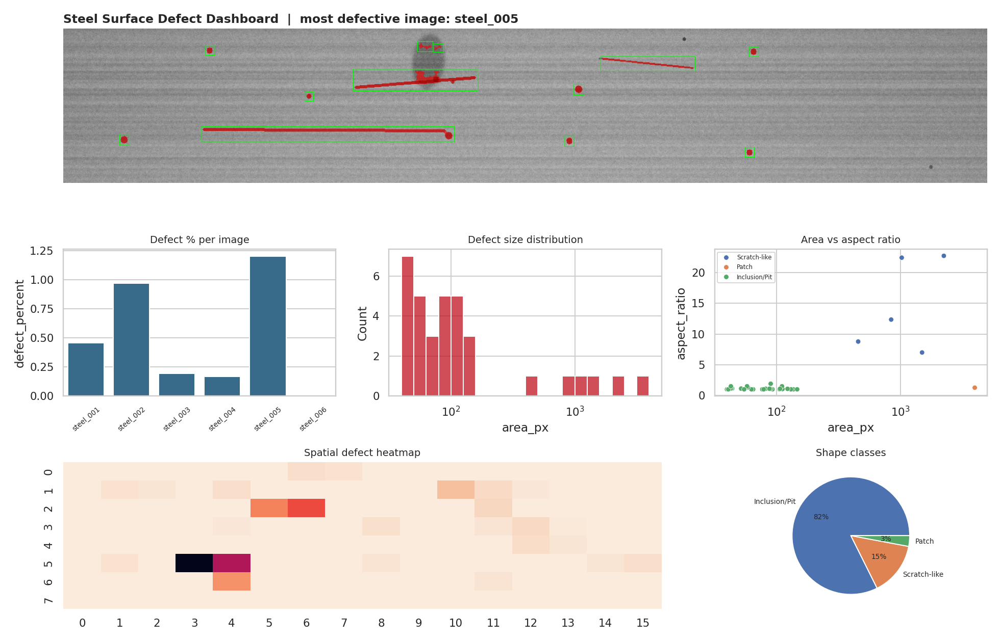
Summary of Experimental Results (Table 1)
6 Test Strips Evaluated| Strip ID | Defect Morphology | Regions | Defect % | IoU | QC Status |
|---|
Key Engineering Insights for Faculty:
- Illumination Robustness: Real steel coils experience severe vignetting and lighting shifts. Without flat-field correction, plain Otsu catastrophically fails (IoU 0.02) by thresholding lighting artifacts.
- Noise Suppression: Adding the adaptive floor
μF + 4σFguarantees zero false positives on clean metal strips (control steel_006 achieved IoU 1.000). - Physical Quantification: Defect regions are categorized by morphometric descriptors (circularity, aspect ratio, area) into Scratches, Inclusions, and Patches rather than unexplainable neural latent vectors.
Interactive Steel Strip Defect Inspector
Select any test strip to examine detection bounding boxes, pixel masks, morphometric region data, and quality control verdict.
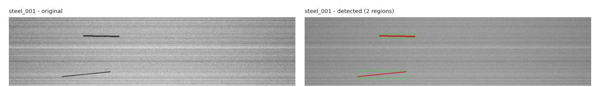
Detected Defect Regions in steel_001
2 Regions Logged in SQLite| Region # | Bounding Box (x, y, w, h) | Area (px) | Aspect Ratio | Circularity | Centroid (cx, cy) | Rule-Based Class |
|---|
Course Project Scientific Visualizations
Complete set of generated analytical figures from the report. Click any figure to open the High-Definition Inspection Lightbox with detailed academic notes.
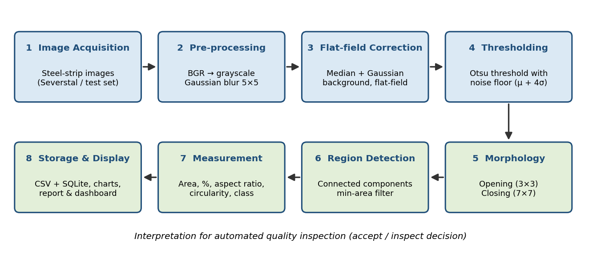
Architectural Pipeline Diagram
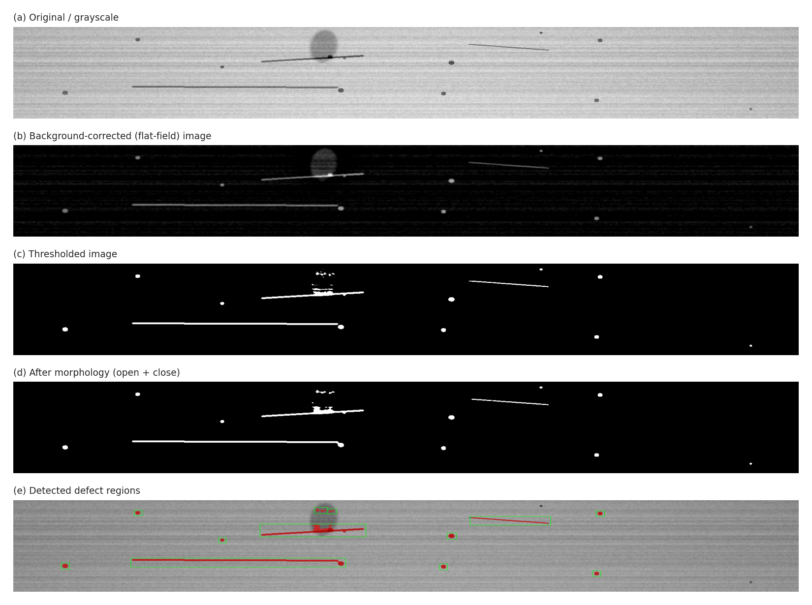
Intermediate Pipeline Stages (steel_005)
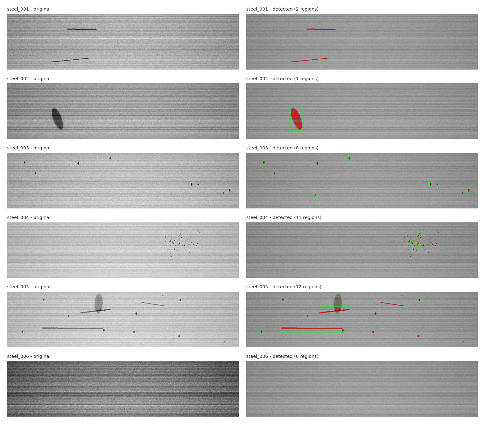
All Strip Detections (Panel)
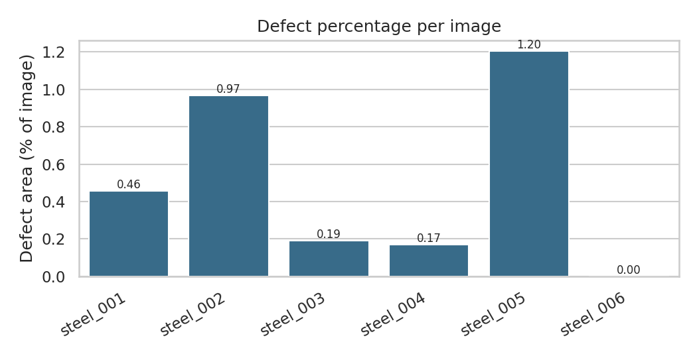
Defect Percentage & QC Threshold
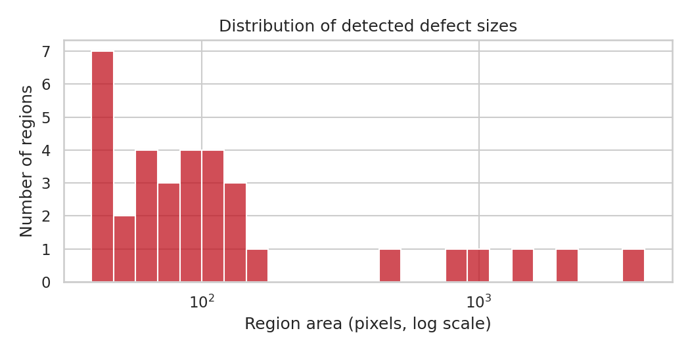
Defect Area Distribution
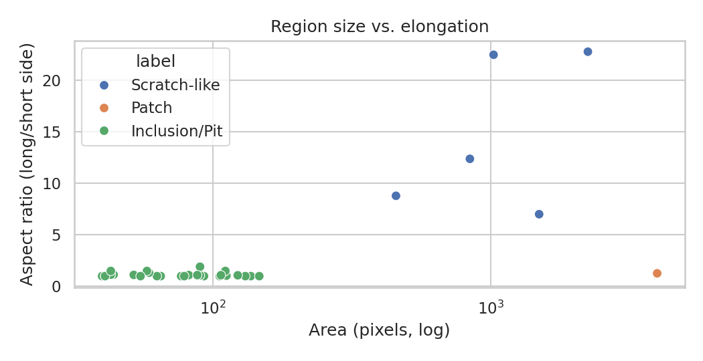
Area vs. Aspect Ratio Clustering
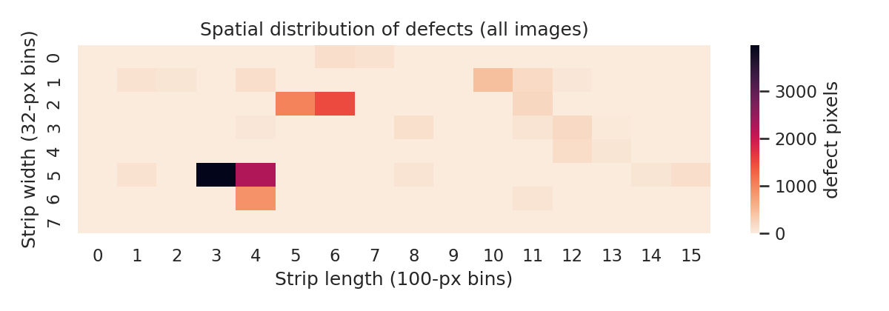
Spatial Defect Density Heatmap
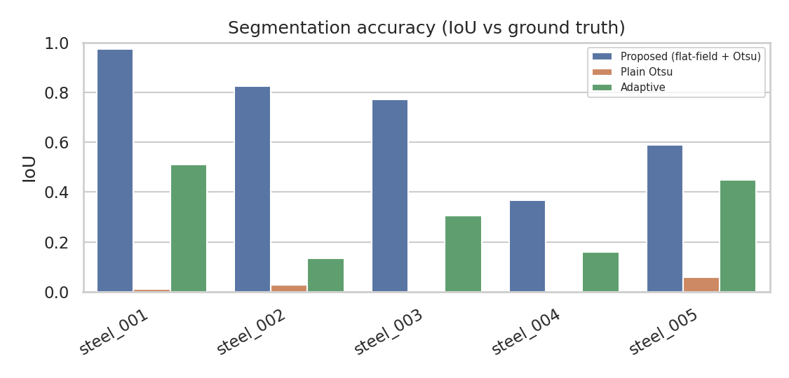
Method Accuracy Benchmark (IoU)
Consolidated Analysis Dashboard
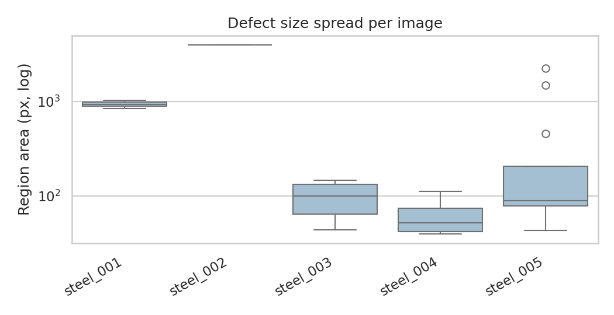
Defect Area Box Plot
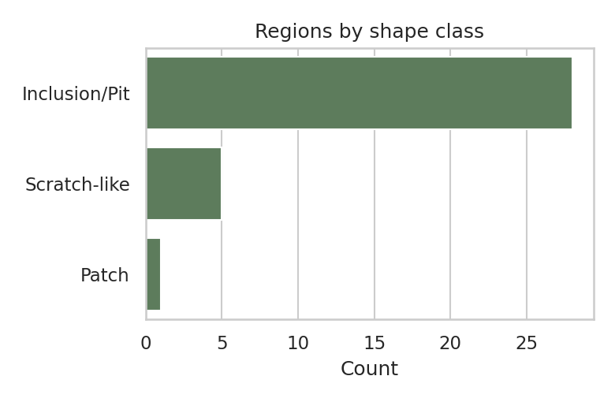
Defect Class Breakdown
8-Stage Classical CV Pipeline Architecture
Mathematical RigorGrayscale Conversion
Standard luminance reduction from RGB to 8-bit intensity:
Y = 0.299R + 0.587G + 0.114B ∈ [0, 255]
Gaussian Smoothing
Suppresses sensor noise and high-frequency rolling grain before background estimation:
I_blur = G_{\sigma=1.0}(5 × 5) * I
Illumination Background Estimation & Flat-Fielding
Estimates low-frequency illumination gradient using a 51 × 51 median filter followed by Gaussian smoothing, then subtracts from the blurred image to produce a normalized flat-field image:
B = G_{25}( \text{median}_{51×51}(I_{\text{blur}}) )
F(x, y) = \text{cv2.normalize}(B(x, y) - I_{\text{blur}}(x, y), [0, 255])
Otsu's Thresholding with 4σ Strict Floor
Maximizes between-class variance σb2(t). To guarantee zero false alarms on defect-free strips, an adaptive floor is enforced:
\sigma_b^2(t) = \omega_0(t)\omega_1(t)[\mu_0(t) - \mu_1(t)]^2
T = \max(t_{\text{Otsu}}, \mu_F + 4\sigma_F) \implies M = (F > T)
Morphological Opening & Closing
Opening removes isolated salt noise; closing bridges micro-fractures inside large defects:
M_{\text{clean}} = (M \circ S_{3×3}) \bullet S_{7×7}
8-Connected Component Labeling & Noise Filter
Segments contiguous foreground blobs; removes artifacts under minimum area:
\text{cv2.connectedComponentsWithStats}(M_{\text{clean}}, 8), \quad A \ge 40 \text{ px}
Morphometric Extraction & Rule-Based Classification
Extracts area, bounding box, aspect ratio, and circularity for physical defect taxonomy:
\text{Aspect Ratio} = \frac{\max(w, h)}{\min(w, h)}, \quad \text{Circularity} = \frac{4\pi A}{P^2}
QC Decision & Storage (SQLite / CSV)
Flags strips exceeding defect tolerance limit (default 0.5%) for rejection:
\text{Defect \%} = \frac{\sum A_i}{1600 \times 256} \times 100 \implies \begin{cases} \text{PASS} & \text{if } \% = 0 \\ \text{MINOR} & \text{if } \% \le 0.5 \\ \text{REJECT} & \text{if } \% > 0.5 \end{cases}
Interactive QC Tolerance Simulator
Live Parameter TuningFaculty can dynamically adjust the factory quality inspection tolerance threshold to observe real-time classification changes across all six steel strip production batches.
Batch Re-Evaluation Under 0.50% Limit:
| Image | Defect % | Default Status | Simulated Verdict |
|---|
System Architecture Flowchart (Figure 1):
Comprehensive Statistical Analysis & Metrics
Ground-Truth ValidatedFigure 4: Defect Percentage per Strip vs. 0.5% Limit
steel_005 (1.203%) and steel_002 (0.968%) breach the 0.50% inspection threshold, whereas steel_003 and steel_004 remain under 0.20% despite possessing numerous individual pit regions.
Figure 8: Segmentation IoU Benchmark Comparison
Proposed method reaches 0.70 mean IoU (peaks at 0.972 for scratches). Plain Otsu fails (0.02) due to vignetting. Adaptive thresholding reaches 0.31 but suffers from noisy edges.
Figure 6: Defect Area vs. Aspect Ratio Clustering
Clear physical separation: Pits/Inclusions form a tight cluster around aspect ratio ≈ 1.0, while Scratches extend up to aspect ratio 22.7. Pearson correlation coefficient = 0.47.
Table 2: Region Statistics by Rule-Based Shape Class
| Class | Regions | Mean Area (px) | Largest Area (px) | Mean Aspect Ratio |
|---|---|---|---|---|
| Inclusion/Pit | 28 | 79.3 | 147 | 1.13 |
| Patch | 1 | 3965.0 | 3965 | 1.27 |
| Scratch-like | 5 | 1209.2 | 2234 | 14.66 |
Figure 7: Spatial Defect Accumulation Heatmap
Spatial 2D accumulation density across strip coordinates. In rolling mills, persistent hotspots localize defective roller cylinders or coolant nozzles, enabling predictive maintenance.
Program Outcomes (POs) Mapping (Table 3)
NBA / NAAC Compliance| PO # | Program Outcome | Project Implementation Relevance |
|---|
Sustainable Development Goals (SDGs) Mapping (Table 4)
UN SDG Alignment| SDG # | UN Goal | Industrial & Academic Significance |
|---|
This project titled “Steel Surface Defect Image Analysis” was executed by roll numbers 25881A05HD, 25881A05GV, 25881A05GN in partial fulfillment of the requirements for Bachelor of Technology in Computer Science and Engineering at Vardhaman College of Engineering, Hyderabad.
Faculty Viva Defense & Technical Q&A Guide
Quick-reference cheat sheet answering key technical and theoretical questions faculty evaluate during project viva.
Why choose Classical Computer Vision over Deep Learning (e.g. YOLO / UNet)?
Answer:
- Interpretability & Determinism: Every pixel decision is traceable to explicit mathematical equations (Otsu variance, background difference) with no black-box uncertainty.
- Zero Annotation & Training Cost: Does not require thousands of hand-annotated polygon masks or GPU training infrastructure.
- Ultra-Low Latency: Executes in ~18ms per strip on standard CPU hardware, enabling line-speed rolling mill deployment (50+ fps).
Why did Plain Otsu Thresholding fail with IoU 0.02?
Answer:
Plain Otsu assumes a bimodal intensity histogram across the entire image. Real steel strips experience severe rolling illumination non-uniformity (vignetting, lighting drop-off). The global threshold splits the illumination gradient rather than defects, causing massive false positives and near-zero IoU.
How does Flat-Field Background Subtraction solve illumination variation?
Answer:
We compute a large-scale background estimate B = G_{25}(median_{51}(I)). Since defects are small localized high-frequency entities and illumination varies slowly, subtracting the image from this background (B - I) yields a flat-field image where background lighting cancels out to zero and defects emerge as distinct positive intensity spikes.
What is the mathematical role of the strict noise floor μF + 4σF?
Answer:
Standard Otsu always bisects any histogram into two classes even on a completely clean strip, leading to spurious false alarms. By enforcing T = \max(t_{\text{Otsu}}, \mu_F + 4\sigma_F), the threshold requires foreground pixels to be at least 4 standard deviations above the flat-field noise, perfectly producing zero detections on clean strip steel_006 (IoU = 1.000).
How are Morphological Opening and Closing utilized?
Answer:
- Opening (Erosion then Dilation with 3×3 ellipse): Eliminates isolated 1-2 pixel noise specks created by surface roughness.
- Closing (Dilation then Erosion with 7×7 ellipse): Fills internal pinholes and connects disjoint fragments within continuous scratches or patches.
How is Circularity computed and what defect types does it differentiate?
Answer:
Circularity is defined as C = 4\pi A / P^2, where A is contour area and P is perimeter. A perfect circle has C = 1.0. Inclusions and pits yield compact shapes with circularity ≈ 1.0 and aspect ratios ≈ 1.0, whereas scratches have high aspect ratios (>10) and low circularity (<0.1).